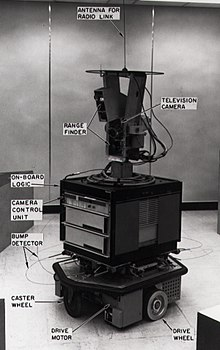

A* was invented by the researchers working on a robot named “Shakey”. The researchers invented it while working the Shakey’s path planning algorithms. The algorithm was first published as a research paper in 1968. A* Search algorithm is one of the best and popular technique used in path-finding and graph traversals.
Shakey The Robot
In the animation A* algorithm is implemented to find the shortest path from top left of the grid to the bottom right. When you generate the obstacles, random hurdles appear on the graph. Upon pressing start the A* Algorithm starts working its way towards the destination. It tries to find the shortest path available to its destination. It takes into account all the turns it has to take due to obstacles created.